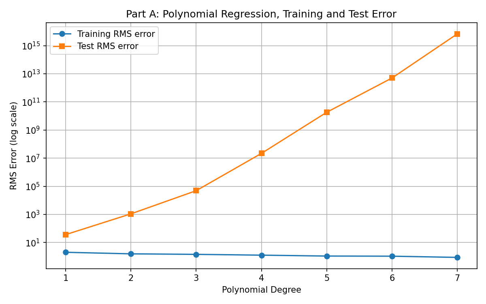
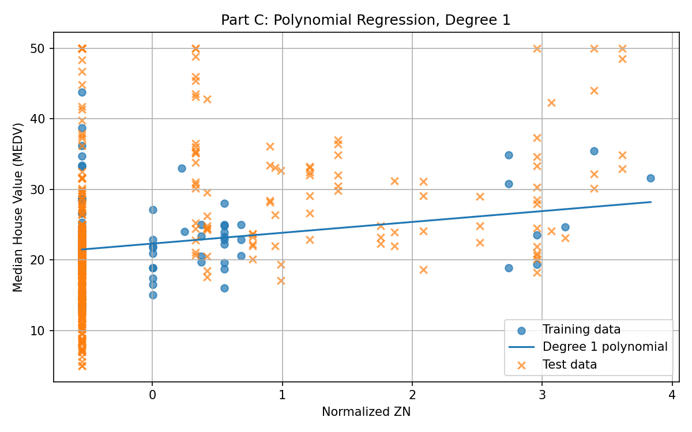
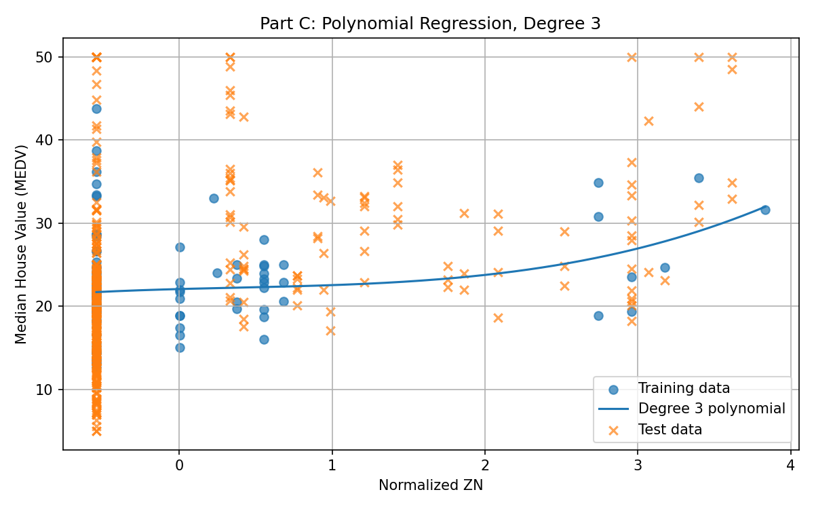
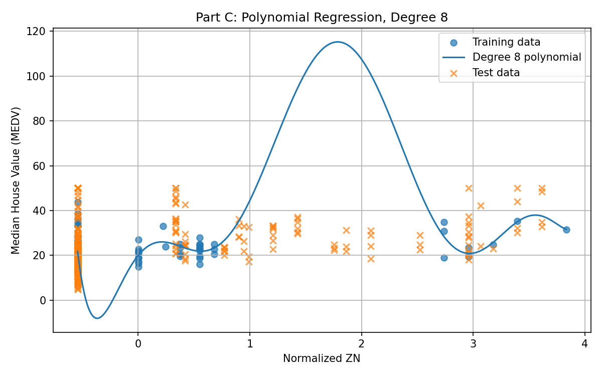
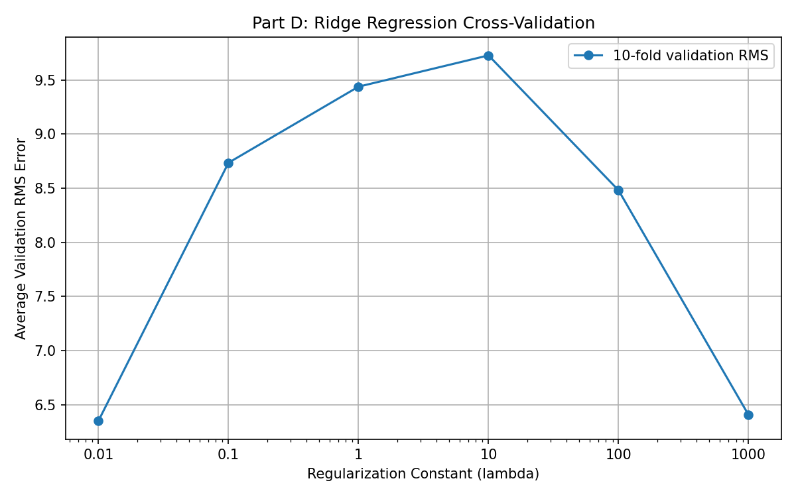
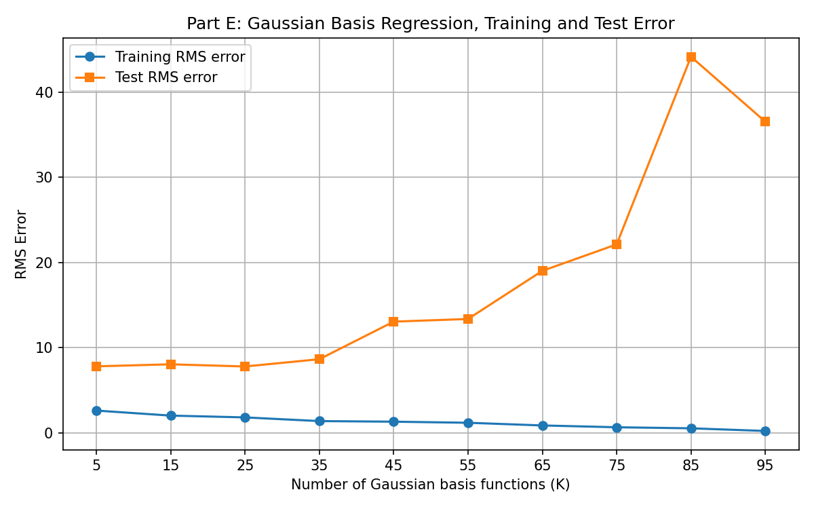
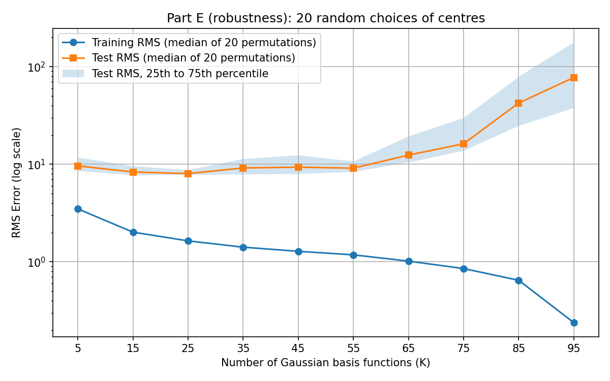
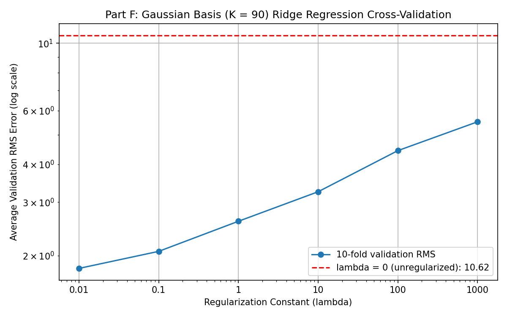

Predicting Boston median house value with polynomial and Gaussian basis functions, regularization, and cross-validation.
The data is the Boston Housing dataset (506 towns, 13 features, target = median house value in $1000s). As required, the first 100 rows are the training set and the remaining 406 rows are the test set. Every feature is normalized using the training-set mean and standard deviation, and the test set is scaled with those same training values. CHAS is 0 for all 100 training rows, so its standard deviation is 0; I set it to 1 to avoid dividing by zero (that column simply stays 0). Models are scored with RMS error, and least-squares weights are computed with the pseudo-inverse.
Normalization (feature j, training rows only): x̃ = (x − μ_j) / σ_j (σ_j set to 1 if it is 0, e.g. CHAS)
RMS error over N points: RMS = sqrt( (1/N) · Σ_n ( y_n − ŷ_n )² )
Least squares for the model ŷ = Φw: E(w) = ‖y − Φw‖² ∇E = −2 Φᵀ(y − Φw) = 0 → ΦᵀΦ w = Φᵀ y → w = (ΦᵀΦ)⁻¹ Φᵀ y = Φ⁺ y
Φ has one row per town and one column per basis function; Φ⁺ is the pseudo-inverse (np.linalg.pinv).
Each feature x is expanded into x, x², …, xd (plus one bias column), with no cross-terms between different features.
φ(x) = [ 1, x̃₁, x̃₁², …, x̃₁^d, x̃₂, …, x̃₂^d, …, x̃₁₃, …, x̃₁₃^d ] (no cross-terms)
ŷ(x) = wᵀφ(x) = w₀ + Σ_j Σ_{p=1..d} w_{j,p} · x̃_j^p (M = 1 + 13d weights)
w = Φ⁺ y (training rows only); RMS computed on training and test rows separately
| Degree | 1 | 2 | 3 | 4 | 5 | 6 | 7 |
|---|---|---|---|---|---|---|---|
| Training RMS | 2.04 | 1.58 | 1.45 | 1.27 | 1.10 | 1.07 | 0.88 |
| Test RMS | 36.4 | 1.10×10³ | 4.87×10⁴ | 9.82×10¹⁴ | 5.81×10¹⁴ | 1.14×10¹⁵ | 6.84×10¹⁵ |

Comment. Training error decreases steadily as the degree rises, because a more flexible model can bend toward the training points. Test error does the opposite and explodes, from about 36 at degree 1 to around 1015 from degree 4 onward, which is overfitting. The effect is much more extreme than usual because the file is ordered by town: the first 100 towns have low crime (CRIM has a standard deviation of 0.39 in training), while test towns reach crime rates near 89. Raising such out-of-range normalized values to the 4th to 7th power gives enormous predictions, so the model is also extrapolating far outside what it saw in training.
d = 1 (M = 14): ŷ = w₀ + w₁x̃₁ + w₂x̃₂ + … + w₁₃x̃₁₃
Weight in original units: w_j(original) = w_j / σ_j RM (6th feature): 4.1956 / 0.4884 ≈ 8.59 ($1000 per room)
Weights from the degree-1 fit on normalized features (bias w0, then features 1 to 13 in dataset order):
| Weight | Feature | Value |
|---|---|---|
| w0 | bias | 22.3090 |
| w1 | CRIM | −1.3380 |
| w2 | ZN | 0.1230 |
| w3 | INDUS | −0.5311 |
| w4 | CHAS | 0.0000 |
| w5 | NOX | 1.0027 |
| w6 | RM (6th feature) | 4.1956 |
| w7 | AGE | −2.1663 |
| w8 | DIS (8th feature) | 0.0107 |
| w9 | RAD | −0.1938 |
| w10 | TAX | −0.3486 |
| w11 | PTRATIO | 0.2613 |
| w12 | B | 0.1811 |
| w13 | LSTAT | 0.1488 |
Comment. The weight on the 6th feature (average rooms per dwelling, RM) is 4.20. It is large and positive, which is reasonable: homes with more rooms are more valuable, and in the original units this is about +$8,600 per additional room. The weight on the 8th feature (weighted distance to the five Boston employment centres, DIS) is only 0.011, essentially zero. That is more surprising, since distance to jobs would normally be expected to matter. A plausible explanation is that DIS is strongly correlated with other features such as NOX and AGE, so the fit gives the credit to those instead, and with only 100 training points the individual weights of correlated features are not well determined. (CHAS has weight 0 because it is constant in the training set.)
z = normalized ZN φ(z) = [1, z, z², …, z^d] ŷ(z) = w₀ + w₁z + w₂z² + … + w_d z^d (d = 1, 3, 8) Plotted curve: ŷ(z) evaluated at 300 evenly spaced z between the smallest and largest value
Using only the 2nd feature (ZN), normalized, with polynomial degrees 1, 3 and 8.



Comment. Degree 1 is nearly a flat line, and degree 3 is a gentle curve that follows the rough upward trend in the training data; both are smooth and stay close to the data. At degree 8 the curve fits the training points tightly but swings wildly between them, dipping below 0 near the left edge and peaking above 100 in a region with almost no training data (the test points there sit around 20 to 40). Many towns have ZN = 0 (63 of the 100 training points), so there is very little information to constrain a high-order curve: it is a clear case of overfitting.
Ridge objective (degree 8, M = 9, bias not penalized):
E_ridge(w) = ‖y − Φw‖² + λ Σ_{k≥1} w_k²
∇E_ridge = 0 → (ΦᵀΦ + λR) w = Φᵀ y → w = (ΦᵀΦ + λR)⁻¹ Φᵀ y
R = diag(0, 1, 1, …, 1)
10-fold cross-validation:
1. shuffle the 100 training indices, split into 10 folds of 10
2. for each λ and fold k: fit w on the other 9 folds, e_k(λ) = RMS on fold k
3. CV(λ) = (1/10) Σ_{k=1..10} e_k(λ)
4. λ* = argmin CV(λ)
| λ | 0 | 0.01 | 0.1 | 1 | 10 | 100 | 1000 |
|---|---|---|---|---|---|---|---|
| Avg. validation RMS | 10.78 | 6.35 | 8.74 | 9.44 | 9.73 | 8.48 | 6.41 |

Choice of λ. The lowest average validation error is at λ = 0.01 (6.35), narrowly ahead of λ = 1000 (6.41). Both are clearly better than no regularization (10.78). With only 100 points, and most of them having ZN = 0, the selection is noisy, so I would choose λ = 0.01 for the specific split.
Each basis function is a Gaussian bump centred on a randomly chosen training point c:
It is close to 1 for towns similar to its centre and falls toward 0 for towns far away. A bias column is added, and all 13 normalized features are used. The assignment does not fix the width, so I used σ = 4.63, the median distance between pairs of normalized training points (a typical spacing of the data).
Gaussian basis function (centre c_k, width σ):
φ_k(x) = exp( −‖x − c_k‖² / (2σ²) ), ‖x − c_k‖² = Σ_{j=1..13} ( x̃_j − c_{k,j} )²
ŷ(x) = w₀ + Σ_{k=1..K} w_k φ_k(x) Φ is N × (K+1)
Centres: first K points of one random permutation of the training towns (K = 5, 15, …, 95) Width: σ = median over pairs (a, b) of ‖x̃_a − x̃_b‖ ≈ 4.62 Weights: w = Φ⁺ y (no regularization)
| K | 5 | 15 | 25 | 35 | 45 | 55 | 65 | 75 | 85 | 95 |
|---|---|---|---|---|---|---|---|---|---|---|
| Training RMS | 2.63 | 2.04 | 1.83 | 1.39 | 1.32 | 1.20 | 0.88 | 0.67 | 0.55 | 0.23 |
| Test RMS | 7.82 | 8.06 | 7.80 | 8.66 | 13.07 | 13.38 | 19.03 | 22.13 | 44.16 | 36.54 |

Comment. Training error falls steadily from 2.6 to 0.23 as K grows, since more bumps give the model more freedom. Test error stays around 8 up to about K = 35, then rises to 13, 22 and 44 as K approaches the 100 training points, where the model is nearly one bump per training town and is memorizing. For reference, always predicting the training-set mean gives a test RMS of 9.83, so the model beats that baseline at small K and does much worse than it at large K. The exact test values depend on which points happen to be chosen as centres; repeating the experiment with 20 random permutations shows the same pattern (test error roughly flat, then rising steeply), with a wide spread at large K.

K = 90 (M = 91). Same ridge solution and cross-validation as part (d):
w = (ΦᵀΦ + λR)⁻¹ Φᵀ y, CV(λ) = (1/10) Σ_{k=1..10} e_k(λ)
Equivalent stacked least-squares form used in the code (more accurate when Φ is nearly singular): minimize ‖ [ Φ ; √λ·R ] w − [ y ; 0 ] ‖²
| λ | 0 | 0.01 | 0.1 | 1 | 10 | 100 | 1000 |
|---|---|---|---|---|---|---|---|
| Avg. validation RMS | 10.62 | 1.81 | 2.07 | 2.60 | 3.25 | 4.43 | 5.52 |

Choice of λ. I would choose λ = 0.01, which has the lowest average validation RMS error (1.8161). Regularization matters a great deal here: with no penalty and 90 basis functions, the unregularized model has a much higher validation RMS error (10.6235), indicating substantial overfitting. Introducing a small penalty significantly improves generalization, while validation error rises as λ increases beyond 0.01, suggesting that stronger regularization increasingly restricts the model's flexibility. Note that these validation errors (about 1.8) are much smaller than the test errors in Part (e) (approximately 8 for some of the better-performing models). One possible explanation is that cross-validation randomly splits the first 100 towns, allowing validation samples to have similar nearby samples in the training folds, whereas the test set consists of the remaining towns in the dataset. This difference in data distribution can make cross-validation error lower than test error.
def polynomial_basis(X, degree):
n_samples, n_features = X.shape
columns = [np.ones(n_samples)] # bias term
for j in range(n_features):
for power in range(1, degree + 1):
columns.append(X[:, j] ** power)
return np.column_stack(columns)
def rms_error(y_true, y_pred):
return np.sqrt(np.mean((y_true - y_pred) ** 2))
# least-squares weights via the pseudo-inverse
weights = np.linalg.pinv(Phi_train) @ y_traindef gaussian_basis(Z, centers, sigma):
sq_dist = ((Z[:, None, :] - centers[None, :, :]) ** 2).sum(axis=2)
return np.column_stack([np.ones(len(Z)), np.exp(-sq_dist / (2 * sigma ** 2))])def ridge_fit(Phi, t, lam):
n_cols = Phi.shape[1]
R = np.eye(n_cols)
R[0, 0] = 0 # do not penalize the bias
A = np.vstack([Phi, np.sqrt(lam) * R])
b = np.concatenate([t, np.zeros(n_cols)])
return np.linalg.lstsq(A, b, rcond=None)[0]Full script: SYDE_572_A2.py